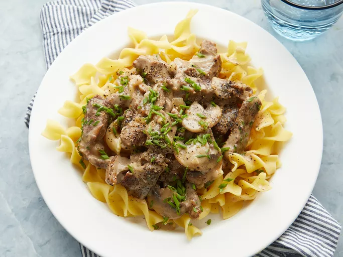

Classic Beef Stroganof Recipe
Home Page

Description:
This classic beef stroganoff recipe is a fairly lean version, as most recipes call for more cream. This is something you can easily adjust to your tastes. I like a little thicker version, with just enough sauce to coat the meat. Serve over buttered noodles.
Ingredients:
- 2 punds beef cheek roast
- 1 tabelspoon vegetable oil
- 8 medium sliced mushrooms
- 2 medium onion. sliced
- 2 cloves garlic, sliced
- 1 cup white whine
Preparation Steps:
- Season with salt and pepper
- Heat oil in a large skillet over high heat until nearly smoking. Stir in beef; cook, stirring constantly, for 6 to 7 minutes, until liquid evaporates and meat browns.
- Remove meat from the pan and set aside. Stir mushrooms, onions, and butter into the pan; cook and stir over medium heat until vegetables are lightly browned.
- Add garlic and stir for 30 seconds. Stir in flour; cook for 1 to 2 minutes until incorporated. Stir in wine and 1 cup of broth, scraping the bottom of the pan to release any browned bits. Bring to a simmer and cook until the sauce thickens, about 3 to 4 minutes.
- Return beef to the pan. Stir in remaining cup of broth; bring to a simmer and cook on low heat for about 1 hour, covered, until beef is tender and sauce is thick. Stir every 20 minutes.
- Stir in crème fraîche. Stir in chives. Season with salt and pepper to taste.
- Serve hot and enjoy!